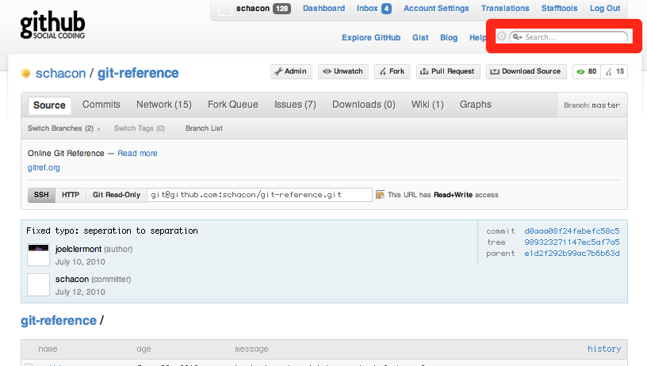

| z, ? | toggle help (this) |
| space, → | next slide |
| shift-space, ← | previous slide |
| d | toggle debug mode |
| ## <ret> | go to slide # |
| c, t | table of contents (vi) |
| f | toggle footer |
| r | reload slides |
| n | toggle notes |
| p | run preshow |
| working | staging | repo |
|---|---|---|
| uncommitted | preparing to commit | committed |
$ mkdir mynewproject
$ cd mynewproject
$ git init
Initialized empty Git repository in
/home/ryansb/mynewproject/.git/
$ vim README
$ git status
# Initial commit
#
# Untracked files:
# (use "git add <file>..." to include in what will
# be committed)
#
# README
nothing added to commit but untracked files present
(use "git add" to track)
$ git add README
$ git status
# Initial commit
#
# Changes to be committed:
# (use "git rm --cached <file>..." to unstage)
#
# new file: README
$ vim README
$ git status
# Initial commit
#
# Changes to be committed:
# (use "git rm --cached <file>..." to unstage)
#
# new file: README
#
# Changes not staged for commit:
# (use "git add <file>..." to update what will
# be committed)
# (use "git checkout -- <file>..." to discard
# changes in working directory)
#
# modified: README
$ git commit -m "Added README"
[master (root-commit) 4f3ea33] Added README
1 files changed, 1 insertions(+), 0 deletions(-)
create mode 100644 README
<Do more commits>
$ git log
commit 773c3104e641a9a86d71a99d67d113abf5709b81
Author: Ryan Brown <ryansb@csh.rit.edu>
Date: Sat Nov 26 18:21:35 2011 -0500
added hello.py
commit 7275078f623c043cf5a22e552b4fd503c3236471
Author: Ryan Brown <ryansb@csh.rit.edu>
Date: Sat Nov 26 18:20:45 2011 -0500
More verbosity for the README
commit 4f3ea3369e9a0b29e41f7aef325a27b62e7938b1
Author: Ryan Brown <ryansb@csh.rit.edu>
Date: Sat Nov 26 18:19:07 2011 -0500
Added README
$ vim hello.py
$ git diff
diff --git a/hello.py b/hello.py
index 3148dce..33f348b 100644
--- a/hello.py
+++ b/hello.py
@@ -1,3 +1,3 @@
#!/usr/bin/env python
-print "hello world"
+print "Hello, world!"
$ git commit -am "Fixed up grammar in hello.py"
[master 01ee7f3] Fixed up grammar in hello.py
1 files changed, 1 insertions(+), 1 deletions(-)

>> Repository.count(:conditions =>
{ :parent_id => nil, :public => 1 })
=> 805411
$ git clone git://github.com/some1/project
Cloning into project...
$ cd project/
$ vim README
$ git commit -am 'made it better'
[master dbeb245] made it better
1 files changed, 2 insertions(+), 0 deletions(-)
$ (fork it on github)
$ git remote add myfork git@github.com:you/project.git
$ git push myfork master:feature_name
...
To git@github.com:you/project.git
9457e38..dbeb245 master -> feature_name
$ git clone git://github.com/some1/project
Cloning into project...
$ cd project/
$ vim README
$ git commit -am 'made it better'
[master dbeb245] made it better
1 files changed, 2 insertions(+), 0 deletions(-)
$ (fork it on github)
$ git remote add myfork git@github.com:you/project.git
$ git push myfork master:feature_name
...
To git@github.com:you/project.git
9457e38..dbeb245 master -> feature_name